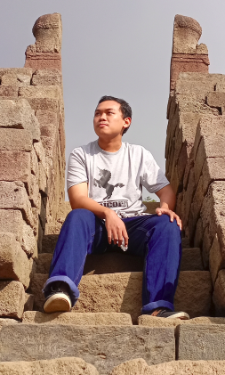

Perkenalkan, saya Nathan Praja Kusuma. Kota asal saya Surakarta (Solo), Jawa Tengah. Saya berkuliah di program studi Teknologi Informasi UGM angkatan 2021. Ketertarikan saya dengan dunia komputer dan pemrograman membuat saya bercita-cita menjadi seorang developer. Dengan bergabung ke dalam komunitas di Night Login, saya ingin bertemu dengan teman-teman yang memiliki minat yang sama dengan saya.
Saya ingin belajar tentang pengembangan Web. Selama ini saya baru mengenal HTML dan CSS yang sangat sederhana. Untuk itu, dengan bergabung ke dalam komunitas NWDC Night Login, saya akan banyak belajar tentng pengembangan web.
Saya ingin bekerja sebagai seorang web developer setelah lulus nanti. Agar nantinya saya siap bekerja, saya perlu membekali diri diri saya dengan keterampilan pengembangan web. Harapan saya, keterampilan tersebut dapat terasah dengan baik melalui komunitas NWDC ini.
Selain alasan pribadi di atas, saya juga ingin bergabung ke NWDC untuk dapat bertemu dengan teman-teman yang memiliki passion yang sama dengan saya. Saya dapat belajar dari mereka yang lebih berpengalaman dan dapat belajar bersama.
Jika saya tergabung ke dalam komunitas NWDC Night Login, saya berharap semua motivasi saya di atas dapat terpenuhi. Ekspektasi saya, setelah 1 periode (1 tahun) di NWDC, saya memahami segala bentu proses yang perlu dilakukan untuk membangun sebuah web. Selain itu, saya berharap agar saya dapt menambah pengalaman di bidang pemrograman dengan mengikuti komunitas ini.
Sebenarnya, saya belum menguasai TechStack apapun :). Saat ini, saya hanya memahami HTML dan CSS yang sangat mendasar (bahkan, untuk membuat laman ini saya hanya mengikuti sebuah tutorial :')). Saya juga hanya tahu JavaScript yang sangat basic (seperti dasar-dasar pemrograman pada bahasa lain). Saya harap saya dapat lebih mengenal berbagai macam TechStack lainnya, seperti React.js, Node.js, ataupun yang lainnya setelah saya bergabung ke dalam NWDC.